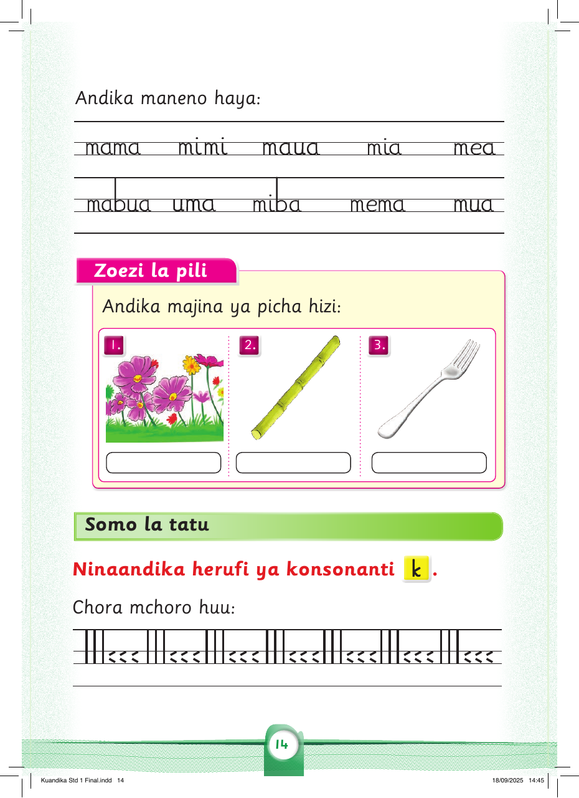
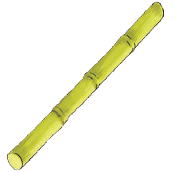
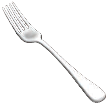

Andika maneno haya:
mama
mimi
maua
mia
mea
mabua
uma
miba
mema
mua
Zoezi la pili
Andika majina ya picha hizi:
1.
2.

3.

Somo la tatu
Ninaandika herufi ya konsonanti k .
Chora mchoro huu / Chora mchoro huu kwa kutumia kifaa cha kuchorea (Spar wheel).
||| <<< ||| <<< ||| <<< ||| <<< ||| <<<